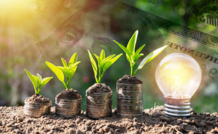
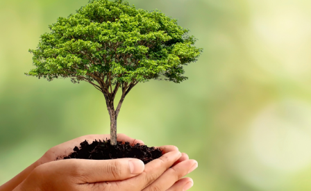
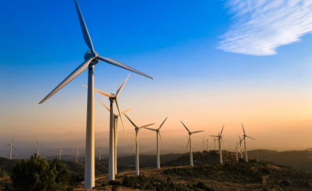
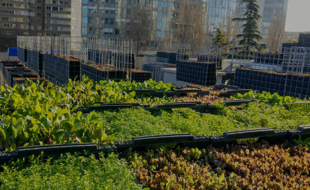

à la une
Forum Biodiversité à Provins
19 ème édition du Forum de Provins, avec pour thème central la Biodiversité. au programme : exposition, conférences, visites, ateliers…

Watty à l’école
Terre avenir s’est associé à cette opération nationale qui vise à former les plus jeunes aux économies d’énergie et d’eau

Décode la science et le développement durable
Toute l’année en Seine-et-Marne, dans l’Aube, la Marne, la Haute Marne et les Ardennes, Décode la Science vous accompagne !

Mois de l’Europe
à l’occasion du mois de l’Europe, Europe de la recherche Terre avenir propose une intervention en visio à deux voix
nos action
-

SENSIBILISATION À L’ENVIRONNEMENT ET AU DÉVELOPPEMENT DURABLE
-
DEVELOPPEMENT DURABLE ET CULTURE SCIENTIFIQUE